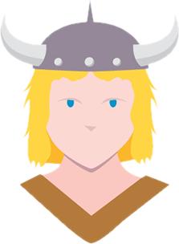

Vocês conseguiram!

Bobby levanta seu tacape mágico e leva de encontro a pilastra da esquerda!
O golpe do pequeno bárbaro faz com que desarme o toldo acima do anão, caindo em cima dele fazendo com que caia no chão enrolado.
Enquanto desarmava Rorrey Barba de Piche, Bobby olha a sua volta e percebe que Sheila com ajuda de Presto conseguiram prender Kendrei.
O trio então consegue seguir o restante da viagem em paz até o Portal de Baldur..
Mas será que a história acaba por ai? O que pode aguardar essa turma de aventureiros pela Costa da Espada?